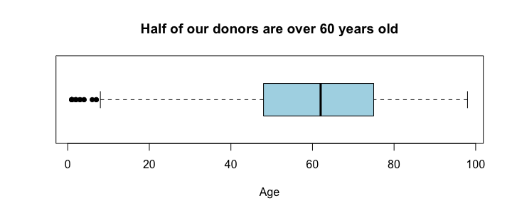
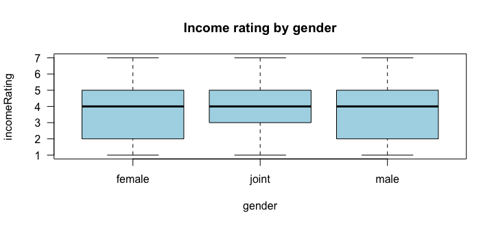

📖 講義動画との対応
- ① The Five-Number Summary
- ② Boxplots
- ③ Measures of Variability: Range & IQR
- ④ Calculating Outliers with 1.5(IQR)
①
5数要約とパーセンタイル
min・Q1・median・Q3・max
中心の指標だけでは、データの広がりがわかりません。5数要約（five-number summary）は、データを4等分する5つの値です。
donors <- read.csv("donors.csv") donors1_20 <- donors[1:20, ] min(donors$age, na.rm = TRUE) quantile(donors$age, probs = c(0.25, 0.50, 0.75), na.rm = TRUE) max(donors$age, na.rm = TRUE)
[1] 1
25% 50% 75%
48 62 75
[1] 98
| 値 | 意味 | donors の年齢 |
|---|---|---|
| 最小 min | いちばん小さい値 | 1 |
| Q1（25パーセンタイル） | 25% がこれより下 | 48 |
| 中央値（50パーセンタイル） | 半分がこれより下 | 62 |
| Q3（75パーセンタイル） | 75% がこれより下 | 75 |
| 最大 max | いちばん大きい値 | 98 |
解釈の例：「寄付者の4人に1人は48歳以下、半数は62歳以上」。summary() なら平均と NA の数もまとめて出ます。
summary(donors$age)
Min. 1st Qu. Median Mean 3rd Qu. Max. NAs
1.00 48.00 62.00 61.61 75.00 98.00 23665
⚠️ 最小値が 1 歳？ 寄付者として不自然です。入力ミスかもしれません。要約の数値は、データの品質チェックにも使えます。
②
箱ひげ図
5数要約を絵にする
boxplot(donors$age, horizontal = TRUE, pch = 16, col = "lightblue", xlab = "Age", main = "Half of our donors are over 60 years old")

箱の左端が Q1、中の太線が中央値、右端が Q3。ひげは外れ値でない範囲の最小・最大まで伸び、その外側の点が外れ値です。タイトルに結論を書くと伝わりやすいグラフになります。
比較箱ひげ図：量 ~ グループ
boxplot(量 ~ カテゴリ, data = df) で、グループごとの分布を並べて比べられます。
boxplot(incomeRating ~ gender, data = donors, col = "lightblue", las = 1, main = "Income rating by gender")

| 箱ひげ図 | |
|---|---|
| 良い点 | 最小・最大・中央値がすぐわかる／大きなデータでも使える／グループ比較に強い／外れ値が見える／形（歪み）のヒント |
| 弱い点 | 何人分かわからない／すき間や山（二峰性）が隠れる／外れ値が多いと読みにくい |
⚠️ 両方とも量的な変数（例：最小寄付額 ~ 最大寄付額）で箱ひげ図を描くと、何百ものグループができて意味のない図になります。量×量には散布図（M6）を使います。
③
ばらつきの指標：範囲と IQR
平均が同じでも違うデータ
data1 <- c(0, 50, 100) data2 <- c(50, 50, 50) c(mean(data1), mean(data2))
[1] 50 50
どちらも平均 50 ですが、ばらつきはまったく違います。これを数で表すのがばらつきの指標（measures of variability / spread）です。
範囲（range）＝ 最大 − 最小
range(donors$age, na.rm = TRUE) diff(range(donors$age, na.rm = TRUE))
[1] 1 98
[1] 97
⚠️ R の
range() は最小と最大の2つを返します。統計の「範囲」は1つの数（差）なので、diff(range(x)) か max(x) - min(x) で求めます。範囲は2つの値しか使わず、外れ値で簡単にふくらむのが弱点。四分位範囲（IQR）＝ Q3 − Q1
IQR は真ん中50%のデータの幅です。端の値を使わないので頑健です。
IQR(donors$age, na.rm = TRUE) IQR(donors1_20$age, na.rm = TRUE)
[1] 27
[1] 24.5
母集団の IQR は 27（＝75 − 48）、最初の20人の IQR は 24.5。標本の値は母集団の値の推定です。ばらつきの指標にはほかに、平均絶対偏差や標準偏差（次の回）があります。
④
1.5 × IQR ルールで外れ値を決める
フェンスを計算する
箱ひげ図の点は、次のフェンス（境界）の外側にある値です。
📐 下のフェンス ＝ Q1 − 1.5 × IQR 上のフェンス ＝ Q3 + 1.5 × IQR
my_IQR <- IQR(donors$age, na.rm = TRUE) my_Q1 <- quantile(donors$age, 0.25, na.rm = TRUE) my_Q3 <- quantile(donors$age, 0.75, na.rm = TRUE) lower_fence <- my_Q1 - 1.5 * my_IQR upper_fence <- my_Q3 + 1.5 * my_IQR c(lower_fence, upper_fence) sum(donors$age < lower_fence, na.rm = TRUE) sum(donors$age > upper_fence, na.rm = TRUE)
25% 75%
7.5 115.5
[1] 20
[1] 0
7.5 歳未満が外れ値（20人）、115.5 歳を超える人はいないので上の外れ値はなし。箱ひげ図の左側の点と一致します。年齢が7歳以下の寄付者は、入力ミスの可能性を調べる価値があります。
📗 R4DS（Wickham & Grolemund, R for Data Science）より：外れ値は入力ミスのこともあれば、重要な新事実のこともある。外れ値を除いた分析と含めた分析の両方を行い、結果が大きく変わるなら、除いた理由を必ず説明する。理由なく消してはいけない。
出典: R4DS Ch.5 Exploratory Data Analysis（Unusual Values）（内容を要約・日本語で再構成）
出典: R4DS Ch.5 Exploratory Data Analysis（Unusual Values）（内容を要約・日本語で再構成）
💻 ミニ練習：寄付総額の外れ値フェンス
donors$totalGivingAmount の IQR と 上のフェンスを求め、上のフェンスを超える人数を数えてください。
q3 <- quantile(donors$totalGivingAmount, 0.75) iqr <- IQR(donors$totalGivingAmount) upper <- q3 + 1.5 * iqr upper sum(donors$totalGivingAmount > upper)
Q3 = 131、IQR = 91 なので上のフェンスは 267.5。右に長い裾をもつ分布なので、上の外れ値がたくさんある。
➡️ 次の講義へ：もっともよく使うばらつきの指標が標準偏差です。次の 標準偏差と正規分布へ。
🏋️ この回の R 演習：550 M2 演習 Q11〜Q15（練習ノートブック 📥 m2_practice_v1.Rmd と同じ問題・同じ番号）。RStudio で解いて、数値を入力すると自動採点されます。
📝 確認クイズ
0 / 6
✏️ Questions are in English — answers are checked instantly.
Question 1
Which five values make up the five-number summary?
Question 2
The 25th percentile of donor age is 48. What does this mean?
Question 3
In a boxplot, what does the line inside the box show?
Question 4
Why is the IQR more resistant to outliers than the range?
Question 5
Q1 = 48, Q3 = 75 and IQR = 27. What is the upper fence?
Question 6
In R, what does range(x) return?